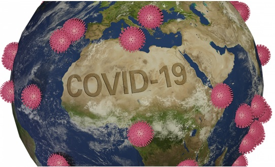
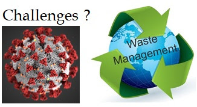

By Ankush Kumar on July 15, 2020
Waste management is one of the pressing issues, and this pandemic increases its seriousness to the next level. To understand this, we need to know several critical aspects of waste management, especially in the current COVID-19 pandemic. In this article, we are mainly discussing plastics and biomedical waste (BMW) management. We focused on, the composition of waste generated during COVID-19, challenges during the COVID-19 pandemic, the type of plastics produced in a pandemic, questioning of the waste management potential of India, basics question which may have in everyone’s minds and few Do’ s/Don’t for general people/sanitation staff/waste processors.
Introduction: Solid waste may consist of domestic waste, sanitary waste, commercial waste, institutional waste, catering market waste, street sweep waste, BMW, non-residential waste. Biodegradable waste, non-biodegradable waste, and household hazardous waste come into the category of municipal solid waste (MSW). Household hazardous waste may be dangerous, toxic, or flammable, so it cannot be mixed with other organic and inorganic MSW. The general procedure to tackle solid waste is in the following order, Reduce >> Reuse >> Recycle >> Recover >> Dispose.
Composition of waste generated during COVID-19: The formal and informal worker needs safety materials used in hospitals and the highly contaminated areas. The safety material used is a personal protection (PPE) kit, which includes three layered masks, splash-proof aprons or gowns, nitrite gloves, gumboots, and safety goggles. All the materials used in PPE kit are disposable, meaning they are only one time usable, and the option is to recycle them or keep them in the form of solid waste. It is guided that the health workers have to change there PPE kit every 8 hours. At current, there are 40 lakh health workers are doing there work, and we need 20-25 lakh PPE kits every day [1]. This data is only of health workers apart from it; various professionals like doctors, nurses, health officials, scientist researchers, police, and drivers all need PPE kits at some point of the day. Another composition of waste includes virus-contaminated household waste which categories as a jeopardy waste.

Challenges: There are several challenges regarding waste management during the COVID-19 pandemic phase are due to the susceptibility of the virus, COVID-19 asymptomatic potential carriers and cause transmission, chances of mixed waste handling [2,3]. 1) The collection of plastic is reduced due to pandemic, and ocean pollution is increasing. People burn plastic waste locally or throw it because a very less number of workers are available for waste collection. Those who are available do not do their work efficiently due to fear or having less protected pieces of equipment. The number of active running companies during a pandemic is very less, and due to that, the plastic waste generated is also reduced. Still, the non-efficient waste management system during an epidemic may lead to an increase in ocean pollution at a slow rate. 2) The breakdown of existing recycling techniques may lead to an economic slowdown—pandemic shutdown the small scale recyclers, small scale waste collectors, small scale waste processors. Due to the pandemic, the waste material buying by private companies may also decrease. 3) Waste management has always been a local task, but due to large pandemic fraction of people are distracts from their responsibility. This distraction is may be due to fear, unemployment, or low income. 4) The composting of waste are changed during the pandemic, people using single used plastics and contaminated medical waste are increase. 5) Lack of training of sanitary staff to handle general waste discharged under COVID-19 pandemic, on-ground application of central pollution control board (CPCB) guidelines, and Swachh Bharat Mission (SBM) advisory, less infrastructure (manual loading may increase the chance of contamination).
Few question regarding waste management: It is essential to ask a few basics questions regarding waste management during COVID-19 are as follows, How do we create a safe way for waste pickers systems? How to create an organized municipal contract? How we set the transparency of inclusive waste management system waste? How we combine the government and private sector, especially during this pandemic? Ex- financing innovative material recycling system, etc. How we processed medical waste, separation before processing? Are the contractors or government officials are follows BMW management rule 2016? According to Dr. Vijay Habbu, Adjunct Professor, Institute of Chemical Technology scientifically, all types of plastic products/equipment are recyclable, and every Indian citizen must know this fact1.
Potential of India to tackle waste: In the context of BMW, common BMW treatment Facilities (CBMWTFs), is 198, captive incinerators are 225 and CBWTFs treated 78% of India’s total 200,000 tonnes of biomedical waste (BMW) in the year 2017 [4]. These data give a comprehensive view of the total available facilities for treatment and statistics for the year 2017. The question is, with this facility and older record of BMW treatment in India, can we able to manage all the BMW waste which is generated?
Do’s and don’t do: Do’s and do not do’s for a various audience of our society during COVID-19 pandemic are as following,
As a general public: Do’s >> Keep domestic hazardous waste separately in yellow-colored and leak-proof bags. Call any local bodies to identify our arrangements. As per SBM advisory, all the dry and wet waste from quarantine homes/zones considers as a BMW. It is our responsibility to give the waste to authorized collectors. In case of any difficulty, contact the local bodies. In rural areas, there is a lack of facility regarding such local authorities. In that case, we can inform/asks/complain to our village head (mukhiya) to arrange those facilities. Don’t >> Please do not mix solid waste, do not dispose of dry waste on the same day as virus lifespan on surfaces of plastics and steels (72h), cardboards (24h), coppers (4h), hand several hours (30h). Please do not dispose of any waste in open space in our locality because the chances of transmission may increase, and localities may be in jeopardy by this action.
As a Sanitary staff: Do’s >> Always wear PPEs, maintain 6 feet distance from others/colleagues, after collecting waste, keep dry waste idle up to 72 h. In any amount of sickness, please stay away from work, go for a doctor, and take rest as advised by the doctor. Keep your tools and vehicle sanitized. Don’t >> Make a separate team with more protection for BMW. Do not touch waste buckets by bare hands. Never mix the dry and wet waste during collecting. Aerosols are even lighter the water droplets, so never carry your shoes in any house, they may contain aerosols.
As Waste processors operators: Do’s >> Maintain a separate record of different fraction of waste, maintain social distancing, provide adequate PPEs, sanitizers, and washing facility to all staff, regular checking regarding safety concerns of all crews, training staff every day and notify their mistakes immediately, sodium hypochlorite is an excellent chemical to sanitize the tools and vehicle. Check the staff’s body temperature regularly. Don’t >> Do not allow any unauthorized person in working place, do not handle unsanitized and BMW mixed waste in organic waste management zones, do not force any workers to do work if they fill any health issue, do not allow to use any digital products inside the working area.
[1]”Experts stress on proper disposal of PPEs – The Hindu.” April 30. 2020, //www.thehindu.com/news/national/experts-stress-on-proper-disposal-of-plastic-ppes/article31475746.ece. Accessed July 11. 2020.
[2]”Webinar on ‘Waste Management under COVID-19 … – TERI.” April 29. 2020, https://www.teriin.org/event/webinar-waste-management-under-covid-19-challenges-and-solutions. Accessed 12 July. 2020.
[3]”COVID-19, Plastic Pollution and the Green Recovery – YouTube.” June 10. 2020, https://www.youtube.com/watch?v=S-eN6hnePkQ. Accessed July 6. 2020.
[4]”Can our waste management systems handle the COVID-19 ….” April 9. 2020, https://www.livemint.com/opinion/quick-edit/can-our-waste-management-systems-handle-the-covid-19-pandemic-11586418529602.html. Accessed July 10. 2020.